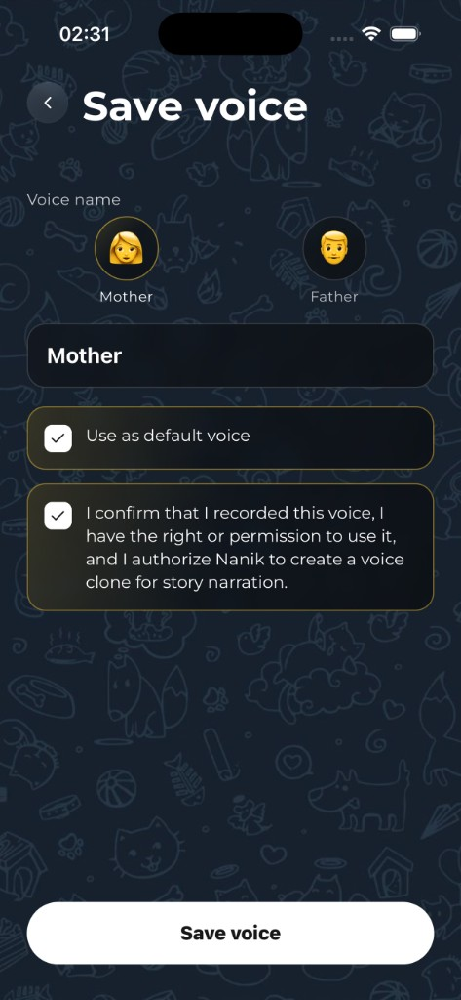

Your voice
Record once. Tell endless stories.
You don't need to record every bedtime story yourself. Create your voice once and Nanik can use it to narrate new stories whenever your child wants to listen.
Perfect for nights when you're busy, traveling, away — or simply want to listen together.
